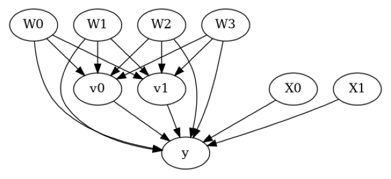
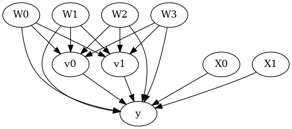

Estimating effect of multiple treatments#
[1]:
from dowhy import CausalModel
import dowhy.datasets
import warnings
warnings.filterwarnings('ignore')
[2]:
data = dowhy.datasets.linear_dataset(10, num_common_causes=4, num_samples=10000,
num_instruments=0, num_effect_modifiers=2,
num_treatments=2,
treatment_is_binary=False,
num_discrete_common_causes=2,
num_discrete_effect_modifiers=0,
one_hot_encode=False)
df=data['df']
df.head()
[2]:
| X0 | X1 | W0 | W1 | W2 | W3 | v0 | v1 | y | |
|---|---|---|---|---|---|---|---|---|---|
| 0 | 0.168032 | -0.582027 | -0.877777 | 0.580743 | 1 | 1 | 1.594449 | 6.249333 | 56.248186 |
| 1 | 1.135945 | 1.113098 | 1.651627 | 0.951515 | 3 | 3 | 19.642165 | 23.518580 | 4102.859143 |
| 2 | 0.189856 | -0.548917 | -3.208358 | 0.343652 | 2 | 1 | -2.013081 | 11.659060 | 161.485673 |
| 3 | 1.197138 | 2.295597 | -0.835399 | 0.970133 | 1 | 2 | 7.193234 | 13.023736 | 1570.680940 |
| 4 | 0.225148 | 0.284826 | -0.180523 | 0.860278 | 1 | 1 | 4.144428 | 7.532836 | 187.331575 |
[3]:
model = CausalModel(data=data["df"],
treatment=data["treatment_name"], outcome=data["outcome_name"],
graph=data["gml_graph"])
[4]:
model.view_model()
from IPython.display import Image, display
display(Image(filename="causal_model.png"))


[5]:
identified_estimand= model.identify_effect(proceed_when_unidentifiable=True)
print(identified_estimand)
Estimand type: EstimandType.NONPARAMETRIC_ATE
### Estimand : 1
Estimand name: backdoor
Estimand expression:
d
─────────(E[y|W1,W2,W0,W3])
d[v₀ v₁]
Estimand assumption 1, Unconfoundedness: If U→{v0,v1} and U→y then P(y|v0,v1,W1,W2,W0,W3,U) = P(y|v0,v1,W1,W2,W0,W3)
### Estimand : 2
Estimand name: iv
No such variable(s) found!
### Estimand : 3
Estimand name: frontdoor
No such variable(s) found!
Linear model#
Let us first see an example for a linear model. The control_value and treatment_value can be provided as a tuple/list when the treatment is multi-dimensional.
The interpretation is change in y when v0 and v1 are changed from (0,0) to (1,1).
[6]:
linear_estimate = model.estimate_effect(identified_estimand,
method_name="backdoor.linear_regression",
control_value=(0,0),
treatment_value=(1,1),
method_params={'need_conditional_estimates': False})
print(linear_estimate)
*** Causal Estimate ***
## Identified estimand
Estimand type: EstimandType.NONPARAMETRIC_ATE
### Estimand : 1
Estimand name: backdoor
Estimand expression:
d
─────────(E[y|W1,W2,W0,W3])
d[v₀ v₁]
Estimand assumption 1, Unconfoundedness: If U→{v0,v1} and U→y then P(y|v0,v1,W1,W2,W0,W3,U) = P(y|v0,v1,W1,W2,W0,W3)
## Realized estimand
b: y~v0+v1+W1+W2+W0+W3+v0*X0+v0*X1+v1*X0+v1*X1
Target units: ate
## Estimate
Mean value: 50.57316998951839
You can estimate conditional effects, based on effect modifiers.
[7]:
linear_estimate = model.estimate_effect(identified_estimand,
method_name="backdoor.linear_regression",
control_value=(0,0),
treatment_value=(1,1))
print(linear_estimate)
*** Causal Estimate ***
## Identified estimand
Estimand type: EstimandType.NONPARAMETRIC_ATE
### Estimand : 1
Estimand name: backdoor
Estimand expression:
d
─────────(E[y|W1,W2,W0,W3])
d[v₀ v₁]
Estimand assumption 1, Unconfoundedness: If U→{v0,v1} and U→y then P(y|v0,v1,W1,W2,W0,W3,U) = P(y|v0,v1,W1,W2,W0,W3)
## Realized estimand
b: y~v0+v1+W1+W2+W0+W3+v0*X0+v0*X1+v1*X0+v1*X1
Target units:
## Estimate
Mean value: 50.57316998951839
### Conditional Estimates
__categorical__X0 __categorical__X1
(-2.739, -0.134] (-3.862, -0.646] -93.486560
(-0.646, -0.0621] -24.125216
(-0.0621, 0.456] 18.824671
(0.456, 1.051] 62.199724
(1.051, 3.554] 130.444222
(-0.134, 0.471] (-3.862, -0.646] -72.862080
(-0.646, -0.0621] -4.793482
(-0.0621, 0.456] 38.837861
(0.456, 1.051] 81.778058
(1.051, 3.554] 152.108120
(0.471, 0.971] (-3.862, -0.646] -60.995027
(-0.646, -0.0621] 6.509509
(-0.0621, 0.456] 49.421424
(0.456, 1.051] 93.885081
(1.051, 3.554] 168.300456
(0.971, 1.563] (-3.862, -0.646] -51.037548
(-0.646, -0.0621] 18.556482
(-0.0621, 0.456] 62.254745
(0.456, 1.051] 105.613255
(1.051, 3.554] 174.771928
(1.563, 4.586] (-3.862, -0.646] -31.176964
(-0.646, -0.0621] 39.080134
(-0.0621, 0.456] 81.182838
(0.456, 1.051] 124.887844
(1.051, 3.554] 193.640084
dtype: float64
More methods#
You can also use methods from EconML or CausalML libraries that support multiple treatments. You can look at examples from the conditional effect notebook: https://py-why.github.io/dowhy/example_notebooks/dowhy-conditional-treatment-effects.html
Propensity-based methods do not support multiple treatments currently.